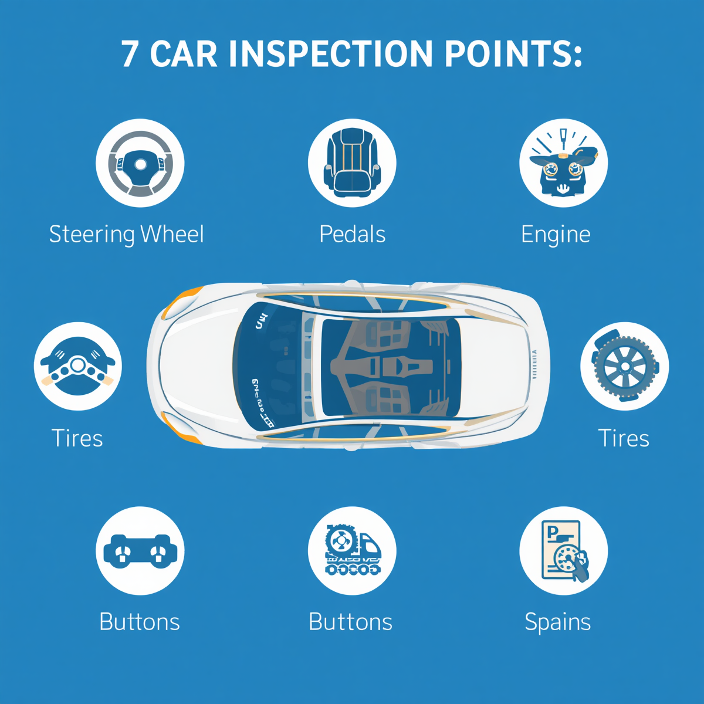
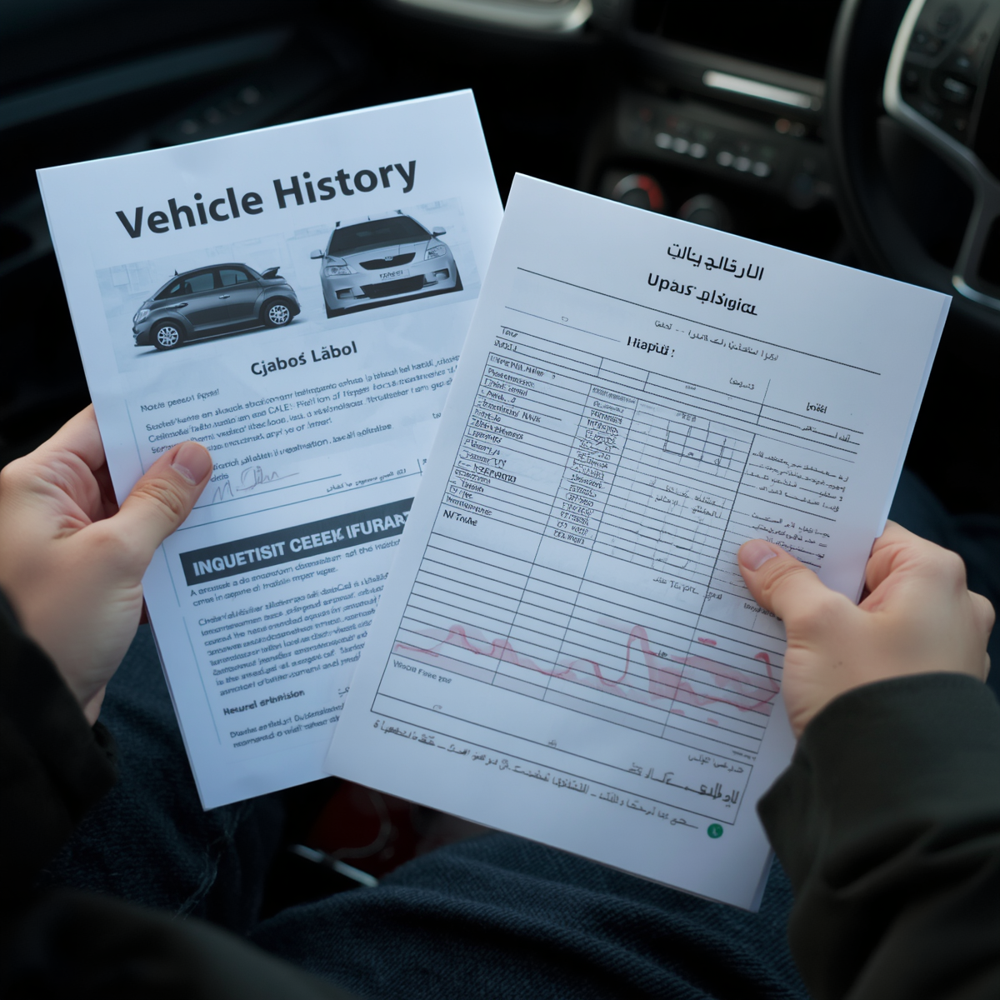
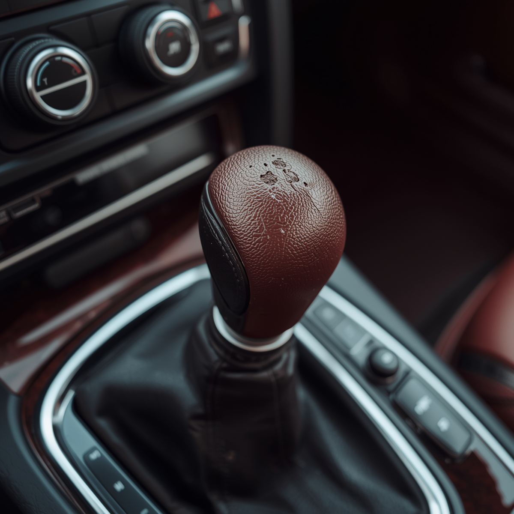
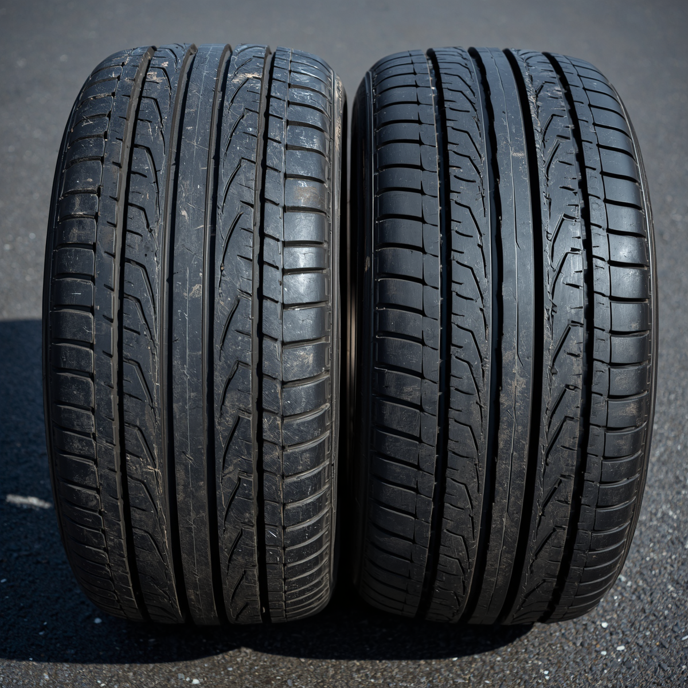

چطور با گوشی موبایل رنگشدگی خودرو رو تشخیص بدیم — ۶ روش عملی از یه کارشناس

گوشی موبایل میتونه اولین خط دفاعی شما در برابر رنگشدگی پنهان باشه
یه روز داشتم سر کار بودم که پیامی رسید. یه مشتری که قبلاً باهاش کار کرده بودم نوشت: «استاد، یه سمند پیدا کردم که قیمتش خوبه، ولی الان نمیتونم ببرمتون. فقط یه عکس گرفتم. از رو عکس میشه بگید رنگ داره؟»
جواب دادم: «نه. از رو عکس نمیشه.» گفت: «پس چیکار کنم؟ نمیخوام فرصت از دست بره.» گفتم: «خودت برو سراغ ماشین. گوشیت رو بردار. بهت میگم دقیقاً چیکار کنی.»
این ماجرا رو به خاطر این گفتم چون خیلیها فکر میکنن تشخیص رنگ، کار ابزار گرونه. درسته که دستگاه ضخامتسنج دقیقتره — ولی باور کنید یا نه، یه گوشی موبایل با دوربین معمولی توی دست یه نفر که بدونه کجا نگاه کنه، میتونه ۷۰ تا ۸۰ درصد رنگشدگیها رو لو بده. ۱۵ سالی که توی این کار بودم، بارها دیدم آدمهای تیزبین با همین گوشی ساده کلاه سرشون نرفته.
چرا اصلاً گوشی موبایل؟
راستش رو بخواهید، بهترین ابزار تشخیص رنگ اینه که همیشه توی جیبته. دوربین گوشیهای امروزی به قدری پیشرفتهست که میتونه جزئیاتی رو نشون بده که چشم برهنه نمیبینه. مهمتر از اون — نور فلش گوشی، زاویهای که میشه باهاش نگاه کرد، و امکان زوم کردن، ابزارهای قدرتمندیه که اکثر خریدارا ازشون استفاده نمیکنن.
وقتی میری سراغ یه خودرو دست دوم، اولین کاری که میکنی چیه؟ دور ماشین میگردی، از دور نگاه میکنی، شاید دستی میکشی روش. ولی اگه بدونی گوشیت رو کِی و کجا استفاده کنی، اون بازدید اولیه یه کارشناسی واقعی میشه.
پایهی همه چیز — نور درست، زاویه درست

هیچ چیزی جای نور آفتاب مستقیم رو نمیگیره
قبل از اینکه سراغ هر روشی بریم، باید یه چیز مهم رو بگم: نور و زاویه، همه چیزن. توی سایه، زیر سقف نمایشگاه، یا زیر نور فلورسنت — تشخیص رنگ خیلی سختتره. بهترین حالت اینه که خودرو رو بکشید بیرون، زیر نور مستقیم آفتاب.
چرا آفتاب مستقیم؟
نور آفتاب یهدست و از یه زاویه میتابه. وقتی خودرو زیر آفتابه، هر قطعهای که رنگ متفاوتی داشته باشه — حتی کمی — رنگش از قطعات مجاور جدا میشه. ماتتر میشه، کمی تیرهتر یا روشنتر، یا یه بافت متفاوت پیدا میکنه. چشم انسان این رو تشخیص میده، مخصوصاً اگه از زاویههای مختلف نگاه کنه نه فقط رو به رو.
اگه آفتاب نبود — فلش گوشی
شب، داخل پارکینگ، یا روز ابری؟ فلش گوشیت بهترین جایگزینه. فلش نور متمرکز و شدیدی داره که وقتی از زاویهی موازی با سطح بدنه بتابه، هر ناهمواری و اختلاف بافت رو آشکار میکنه. این دقیقاً همون کاریه که کارشناسها با چراغقوهی حرفهایشون میکنن — فقط با قدرت کمتر.
روش اول — فلش موازی با سطح بدنه
این اولین و مهمترین روشیه که استفاده میکنم. اگه فقط یه چیز از این مقاله یاد بگیری، همینه.
گوشی رو تقریباً موازی با سطح بدنه نگه دار — فاصله حدود ۱۵ تا ۲۰ سانتیمتر. فلش رو روشن کن. حالا آروم گوشی رو امتداد بدنه حرکت بده. از گلگیر جلو تا درب، از درب تا گلگیر عقب. نگاه کن به سطح — نه به گوشی.
چی دنبالش بگرد؟ جایی که نور به شکل متفاوتی پخش میشه. یه قطعه ممکنه کمی براقتر، ماتتر، یا بافتش زبرتر باشه. اونجا احتمالاً رنگ شده.
توی ۱۵ سال کارشناسی، بارها با همین روش ساده رنگهایی رو لو دادم که صاحب ماشین فکر میکرد کاملاً پنهانه. رنگکار بد هیچوقت نمیتونه بافت سطح رو با کارخونه یکسان کنه. این زبری یا صافی اضافه، با نور موازی کاملاً لو میره.
روش دوم — زوم دوربین و تشخیص بافت پوست پرتقالی

بافت «پوست پرتقالی» — نشانهی رنگ دستی غیر کارخانهای
رنگ کارخانه یه ویژگی داره که رنگ دستی (حتی حرفهای) خیلی سخت میتونه تقلیدش کنه: بافت سطح کاملاً یکنواخته. نه خیلی صاف، نه خیلی زبر — یه حالت میانه که از فاصله نزدیک هم همینطوره.
وقتی کسی ماشینی رو رنگ میکنه، حتی با اسپریگان حرفهای، بافت سطح کمی متفاوت میشه. گاهی خیلی صاف (چون سنباده زدن زیادی)، گاهی حالت «پوست پرتقال» داره که از نزدیک مثل پوست یه نارنج ریز ریز دیده میشه. این رو با چشم برهنه از فاصله نمیشه دید. ولی دوربین گوشی با ماکرو یا زوم؟ آشکارا دیده میشه.
دوربین رو روی ماکرو (یا بیشترین زوم ممکن) بذار. از فاصله ۵ تا ۱۰ سانتیمتری، عکس بگیر از سطح بدنه. همین کار رو روی قطعات مختلف انجام بده — گلگیر، درب، کاپوت. حالا عکسها رو با هم مقایسه کن. اگه یه قطعه بافت کاملاً متفاوتی داشت، اونجا رنگ شده.
روش سوم — فیلمبرداری حرکتی و تشخیص بازتاب
این روش یکم هنریه ولی خیلی موثره. رنگ کارخانه، سطح خودرو رو مثل آینه بازتاب میده — خطوط محیط (آسمان، درخت، ساختمان) توی رنگ به شکل تمیز و یکنواخت منعکس میشن.
وقتی یه قطعه رنگ شده و سطحش کمی ناهموار شده، اون بازتاب دیگه یکنواخت نیست. خطوط کج میشن، موج برمیدارن، یا یه جای دیگه شکسته میشن. این رو با یه فیلم آروم، خیلی راحت میشه دید.
دوربین فیلمبرداری رو باز کن. آروم، از جلو تا عقب خودرو حرکت کن و فیلم بگیر — از فاصله حدود نیم متری. بعد فیلم رو پخش کن و به بازتاب خطوط نگاه کن. جایی که بازتاب یهدفعه «موج» میخوره یا کج میشه، احتمالاً اونجا رنگ یا صافکاری شده. مخصوصاً توی نور آفتاب، این روش خیلی قابل اطمینانه.
روش چهارم — بررسی درز بین قطعات

درز یکنواخت = سالم؛ درز نامتقارن = صافکاری یا تصادف
این یکی از قدیمیترین و قابل اطمینانترین روشهاست. رنگشدگی معمولاً به خاطر یه رویداده — تصادف، صافکاری، تعویض قطعه. و هر کدوم از اینا روی درزها اثر میذارن.
فلش گوشی رو روشن کن و از داخل فضای بین گلگیر و درب، یا بین درب و قاب خودرو نگاه کن. دنبال چی بگرد؟
- درز نامتقارن بین گلگیر و درب ⚠️ مشکوک
- رنگ روی بستها و پیچهای داخل درز 🔴 رنگ شده
- رنگ یا واکس داخل لاستیک دور شیشه 🔴 رنگ شده
- درز یکنواخت، پیچها تمیز ✅ سالم
- درز پر از کیت یا بتونه 🔴 صافکاری شده
پیچهای توی فضای درز بین گلگیر و شاسی رو جدی بگیر. اگه رنگ روی پیچها پاشیده، یعنی گلگیر باز نشده بوده و مستقیم روی جایگاهش رنگ شده. این یه نشانهی قوی از رنگشدگیه.
روش پنجم — پاشش رنگ روی لاستیکها و نوارهای پلاستیکی
این یکی رو بدون هیچ ابزاری میشه دید — ولی خیلیها از کنارش رد میشن. رنگکار حرفهای قبل از رنگزدن، همه لبهها رو میپوشونه. رنگکار کمدقت اینطور نیست.
گوشیت رو ببر نزدیک لاستیک دور شیشه، نوار لاستیکی دور درب، یا لبه پلاستیکی پایین گلگیر. فلش رو روشن کن. اگه ذرات رنگ روی این نوارها پاشیده — اونجا رنگ شده. این نشانه صد در صد قطعیه.
روش ششم — اپلیکیشنهای گوشی و محدودیتهاشون

اپهای گوشی — مفید ولی نه جادویی
راستش رو بخواهید، باید صادق باشم: اکثر اپلیکیشنهایی که ادعا میکنن با گوشی ضخامت رنگ میسنجن، دقیق نیستن. آهنربای توی گوشی (مگنتومتر) برای این کار طراحی نشده و نتایجش قابل اعتماد نیست. بعضی از این اپها فقط یه عدد تصادفی نشون میدن.
ولی بعضی اپها واقعاً مفیدن:
- CarVertical / Carfax ✅ استعلام تاریخچه خودرو
- Google Lens ✅ شناسایی مدل و مقایسه رنگ
- دوربین گوشی + زوم ✅ بهترین ابزار دیجیتال
- اپهای ادعای ضخامتسنج رنگ 🔴 غیرقابل اعتماد
بهترین اپ واقعاً همون دوربین خودته. با زوم، با فلش، از زاویههای مختلف. این سادهترین و قابل اطمینانترین ابزار دیجیتالی که الان داری.
چیزهایی که هیچ ابزاری لازم ندارن — فقط چشم
یه سری نشانه هست که آنقدر واضحه که حتی بدون گوشی هم باید بریشون. اگه اینا رو دیدی، مستقیم برو سراغ کارشناس:
- رنگ متفاوت بین گلگیر جلو و گلگیر عقب — حتی کمی
- یه قطعه برقزنتر از بقیه در نور آفتاب
- کاپوت یا صندوق که زیر فشار دستت فرو میره یا صدا میده
- درزهای نامتقارن بین قطعات مختلف
- رنگ روی لاستیکها یا داخل قاب چراغ
- کیت یا ماستیک توی فضای بین قطعات
وقتی گوشی کافی نیست — کِی باید کارشناس بیاری
این روشها برای تشخیص اولیهست. ولی یه سری جاها گوشی کافی نیست:
اگه شک داری رنگ روی ستونها (A، B یا C)، کف صندوق، یا قطعات زیر ماشین پاشیده، باید حتماً کارشناس بیاری. این نقاط رو نمیشه با چشم یا گوشی به درستی ارزیابی کرد. یه تصادف ساختاری که با رنگ پوشونده شده، با هیچ اپلیکیشنی لو نمیره. اونجا باید تجربه و ابزار حرفهای باشه.
سوالات متداول
آیا واقعاً میشه با گوشی رنگشدگی رو تشخیص داد؟
بله، برای بسیاری از موارد. دوربین گوشیهای امروزی کیفیت خوبی دارن و با تکنیک درست (نور موازی، زوم، فیلمبرداری حرکتی) میشه ۷۰ تا ۸۰ درصد رنگشدگیها رو شناسایی کرد. البته برای رنگشدگی روی ستونها و قطعات ساختاری، کارشناسی حرفهای ضروریه.
بهترین نور برای تشخیص رنگشدگی چیه؟
نور مستقیم آفتاب بهترینه. بعدش فلش گوشی از زاویه موازی. بدترین نور برای این کار، نور فلورسنت سالنهای نمایشگاهه — که همه چیز رو یکنواخت نشون میده و تشخیص رو سخت میکنه. همیشه اصرار کن خودرو رو بیارن بیرون.
اپلیکیشنهای ضخامتسنج رنگ چقدر قابل اعتمادن؟
متأسفانه اکثرشون اصلاً قابل اعتماد نیستن. مگنتومتر گوشی برای این کار طراحی نشده و نتایج غیردقیق میده. بهترین ابزار دیجیتال همون دوربین گوشیته که با تکنیک درست استفاده بشه. اگه میخوای ضخامت دقیق بدونی، باید از دستگاه ضخامتسنج واقعی استفاده کنی.
پاشش رنگ روی لاستیک دور شیشه — همیشه نشانه رنگشدگیه؟
تقریباً همیشه بله. رنگکار حرفهای قبل از رنگ، لاستیکها رو میپوشونه. اگه رنگ روی لاستیک پاشیده، یعنی یا کار دستی و غیرحرفهای بوده، یا قطعه سریع و بدون دقت رنگ شده. در هر دو حالت، نشانهی رنگشدگیه.
اگه درز بین قطعات نامتقارن بود، یعنی حتماً تصادف بوده؟
نه حتماً — ولی یه نشانهی جدیه. درز نامتقارن میتونه نشانه تصادف، صافکاری، یا تعویض قطعه باشه. حتی ممکنه از کارخانه هم کمی نامتقارن بوده باشه. ولی اگه با علائم دیگه مثل رنگ متفاوت یا پاشش رنگ همراه بود، جدی بگیرش.
اگه با روشهای گوشی چیزی نفهمیدم، آیا خودرو سالمه؟
نه لزوماً. گوشی محدودیت داره. بعضی رنگشدگیهای حرفهای رو نمیشه با چشم و گوشی تشخیص داد. مخصوصاً رنگ کارگاههای سطح اول که کار بسیار تمیزی انجام میدن. برای هر خودرویی که قصد خریدش داری، کارشناسی حرفهای رو جدی بگیر. گوشی فقط غربال اولیهست.